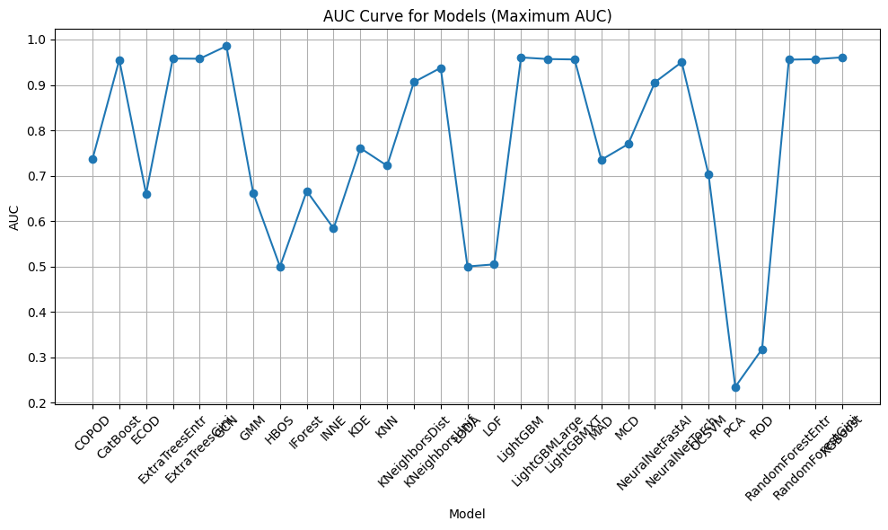
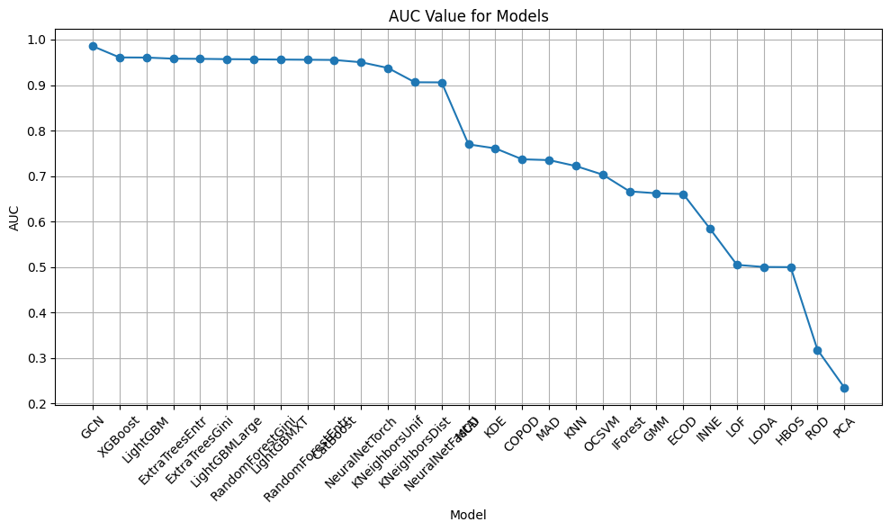

import matplotlib.pyplot as pltimport pandas as pd# 필터링 조건에 맞는 데이터 선택filtered_df = df[(df['throw_rate'] ==0.5) & (df['train_size'] ==9009)]# 모델 별 최대 AUC 값 구하기max_auc_df = filtered_df.groupby('model')['auc'].max().reset_index()# AUC 커브 그리기plt.figure(figsize=(10, 6))plt.plot(max_auc_df['model'], max_auc_df['auc'], marker='o', linestyle='-')plt.xlabel('Model')plt.ylabel('AUC')plt.title('AUC Curve for Models (Maximum AUC)')plt.xticks(rotation=45) # x축 라벨 회전plt.grid(True)plt.tight_layout()plt.show()

import matplotlib.pyplot as pltdef plot_auc_curve(filtered_df):# 모델 별 최대 AUC 값 구하기 max_auc_df = filtered_df.groupby('model')['auc'].max().reset_index()# AUC 값 기준으로 데이터프레임 정렬 (가장 큰 값이 왼쪽에 오도록) max_auc_df = max_auc_df.sort_values(by='auc', ascending=False)# AUC 커브 그리기 plt.figure(figsize=(10, 6)) plt.plot(max_auc_df['model'], max_auc_df['auc'], marker='o', linestyle='-') plt.xlabel('Model') plt.ylabel('AUC') plt.title('AUC Value for Models') plt.xticks(rotation=45) # x축 라벨 회전 plt.grid(True) plt.tight_layout()# 커서를 댔을 때 추가 정보 표시def show_info(event):if event.xdata isnotNoneand event.ydata isnotNone: model_index =int(round(event.xdata)) model_name = max_auc_df.iloc[model_index]['model'] throw_rate = filtered_df[filtered_df['model'] == model_name]['throw_rate'].iloc[0] train_frate = filtered_df[filtered_df['model'] == model_name]['train_frate'].iloc[0] test_frate = filtered_df[filtered_df['model'] == model_name]['test_frate'].iloc[0] plt.gca().set_title(f"AUC Curve for Models (Maximum AUC)\nModel: {model_name}\nThrow Rate: {throw_rate}\nTrain FRATE: {train_frate}\nTest FRATE: {test_frate}") plt.gcf().canvas.mpl_connect('motion_notify_event', show_info) # 마우스 이동 이벤트에 대한 콜백 함수 등록 plt.show()# 함수 호출 예시plot_auc_curve(filtered_df)

import plotly.graph_objs as goimport plotly.express as pxdef plot_auc_curve(filtered_df):# 모델 별 최대 AUC 값 구하기 max_auc_df = filtered_df.groupby('model')['auc'].max().reset_index()# AUC 값 기준으로 데이터프레임 정렬 (가장 큰 값이 왼쪽에 오도록) max_auc_df = max_auc_df.sort_values(by='auc', ascending=False)# AUC 커브 그리기 fig = px.line(max_auc_df, x='model', y='auc', markers=True) fig.update_traces(line=dict(width=2)) # 라인 굵기 설정 fig.update_layout( title='AUC Curve for Models', xaxis_title='Model', yaxis_title='AUC', xaxis=dict(tickangle=45), # x축 라벨 회전 hovermode='closest', # 마우스 호버시 가장 가까운 점 정보 표시 )# 커서를 댔을 때 추가 정보 표시def show_info(trace, points, selector): model_name = max_auc_df.iloc[points.point_inds[0]]['model'] throw_rate = filtered_df[filtered_df['model'] == model_name]['throw_rate'].iloc[0] train_frate = filtered_df[filtered_df['model'] == model_name]['train_frate'].iloc[0] test_frate = filtered_df[filtered_df['model'] == model_name]['test_frate'].iloc[0] fig.update_layout(title=f"AUC Curve for Models (Maximum AUC)<br>Model: {model_name}<br>Throw Rate: {throw_rate}<br>Train FRATE: {train_frate}<br>Test FRATE: {test_frate}") fig.data[0].on_hover(show_info) fig.show()# 함수 호출 예시plot_auc_curve(filtered_df)